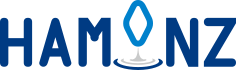
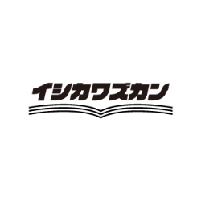

協賛企業
株式会社アーネストテクノロジーズ
READYFORを通じてNOTO Re:Bloomをご支援いただきました。SUPPORTED BY EARNEST TECHNOLOGIES
部活で学校を選ぶ、という新しい選択肢。
全国の高校・中学・大学の”部活”が検索できるサイトです。偏差値だけじゃない、部活動でも学校探しができる、部活動に特化した新しいメディアです。
学校選びの基準に「どんな部活があるか」を加えたい方へ。気になる部活から、次の学校を探してみてください。
協賛・協力PARTNERS
泥ん子運動会2026は、たくさんの方の協力をいただきながら9月20日に開催することができました。このページでは、活動を支えてくださった協賛企業・協力企業の皆さまと、その取り組みをご紹介します。

SPONSOR PARTNER
ご支援への感謝を込めて、株式会社アーネストテクノロジーズ、TechsPlus株式会社、萬屋おてるの皆さまをご紹介します。
株式会社アーネストテクノロジーズ
READYFORを通じてNOTO Re:Bloomをご支援いただきました。SUPPORTED BY EARNEST TECHNOLOGIES
全国の高校・中学・大学の”部活”が検索できるサイトです。偏差値だけじゃない、部活動でも学校探しができる、部活動に特化した新しいメディアです。
学校選びの基準に「どんな部活があるか」を加えたい方へ。気になる部活から、次の学校を探してみてください。
SUPPORTED BY TECHSPLUS
「逆転コーチング」は、志望校合格者の専属コーチが、1日単位の学習計画作成と日々の進捗管理をマンツーマンで支える大学受験オンライン塾です。
SUPPORTED BY 萬屋おてる
石川県を中心に北陸三県で活動する「萬屋おてる」さんに、NOTO Re:Bloomの取り組みを応援していただいています。
SPONSORSHIP
企業名やロゴだけでなく、ご希望に合わせてサービスや取り組みも紹介しています。
企業名、ロゴ、サービスや事業内容、公式サイトへのリンクを掲載します。
企業名だけでなく、サービス名や取り組みもWebサイト上でご紹介します。
ご希望があれば、バナーや紹介素材も活動報告などで使用します。
サービス名を出したい、バナーを使いたいなど、ご希望を伺いながら調整します。
協力企業・団体COOPERATION
協賛とは別の形で、企画やつながりづくりを支えていただいています。
石川県主催・北國新聞社特別協力の学生プロジェクトです。学生が人とのつながりを通じて石川の魅力を知り、地域への愛着を深める活動に取り組んでいます。
NOTO Re:Bloomとのつながり泥ん子運動会の情報発信と学生参加に向けて連携いただきました。
ishimo公式サイト →
プロスポーツチーム支援、スポンサー企業の広報・PR支援、公民連携スポーツイベント支援に取り組む企業です。
NOTO Re:Bloomとのつながり本プロジェクトが生まれるきっかけとなった「NOTO-REBOOST U-23」を共催し、スポーツビジネスの講義や企画づくりを通じて学生の挑戦を支えていただきました。
HAMONZ公式サイト →
石川県の仕事と暮らしの情報を発信し、地域企業と県内外の若者をつなぐ求人・地域メディアを運営しています。
NOTO Re:Bloomとのつながり「NOTO-REBOOST U-23」を主催し、学生が能登の地域や企業と出会い、スポーツを軸に事業づくりへ挑戦する機会をつくっていただきました。
仕事や暮らしのズカン →2026年9月20日開催分SPONSORSHIP STATUS
9月20日の泥ん子運動会に向けた協賛募集は8月21日で締め切り、イベントは予定どおり開催しました。ご協力・ご相談をいただいた皆さま、ありがとうございます。